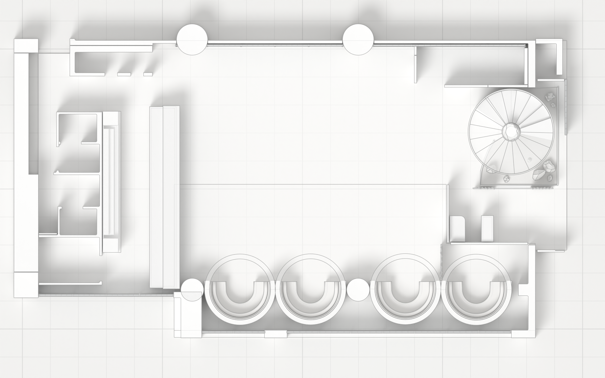
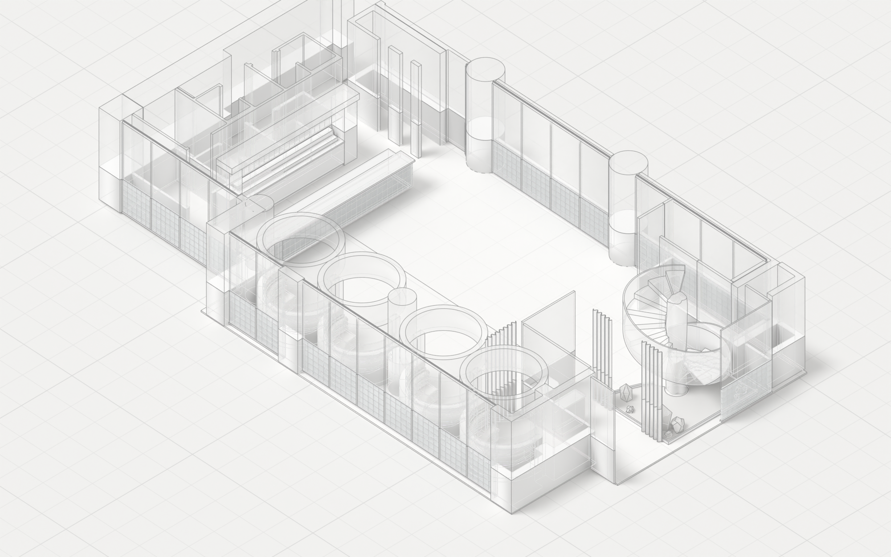
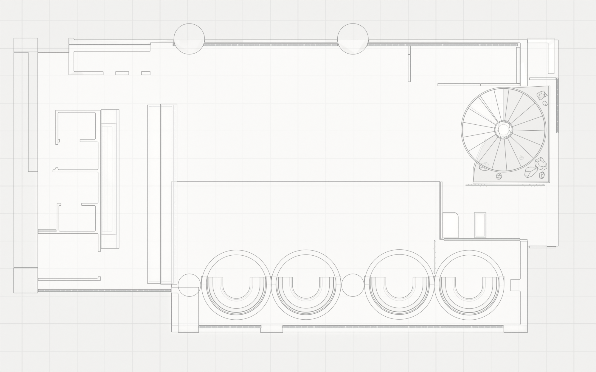
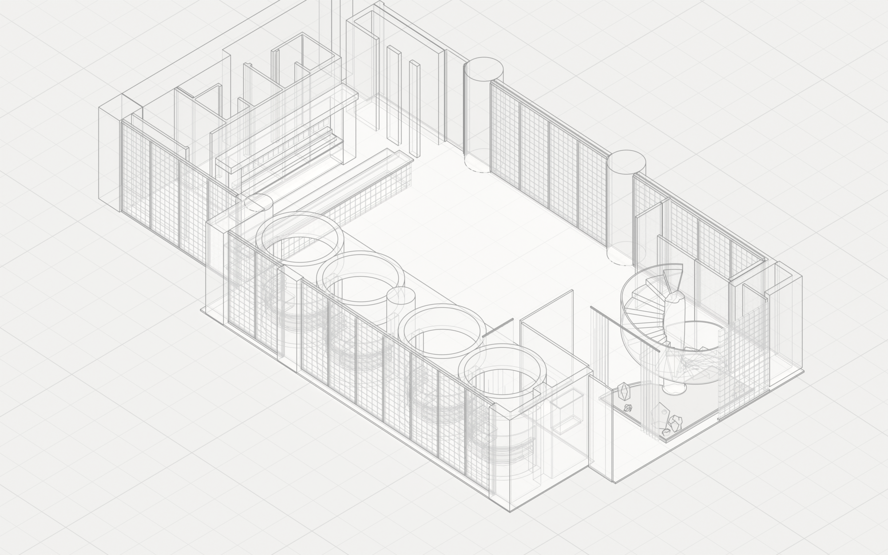
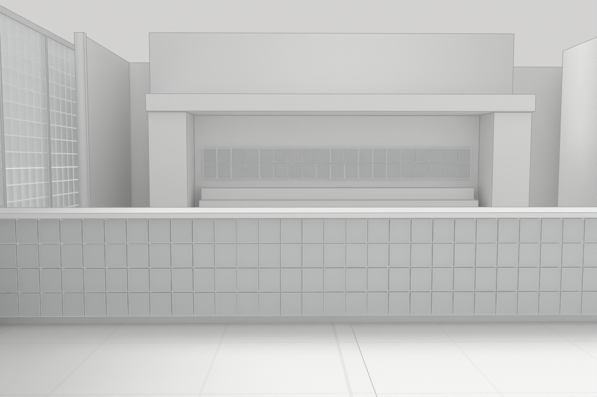
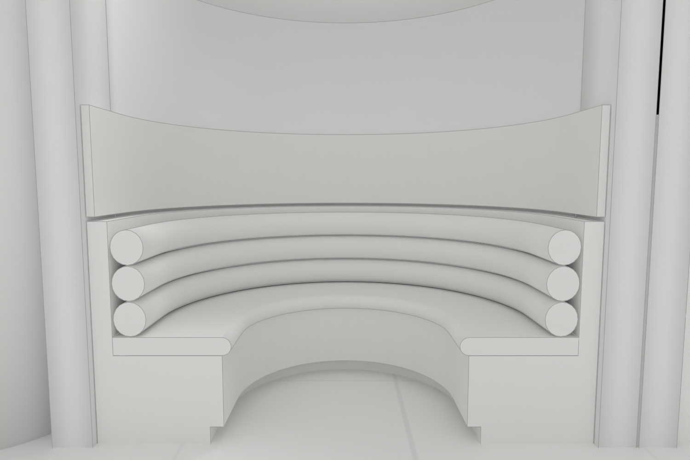
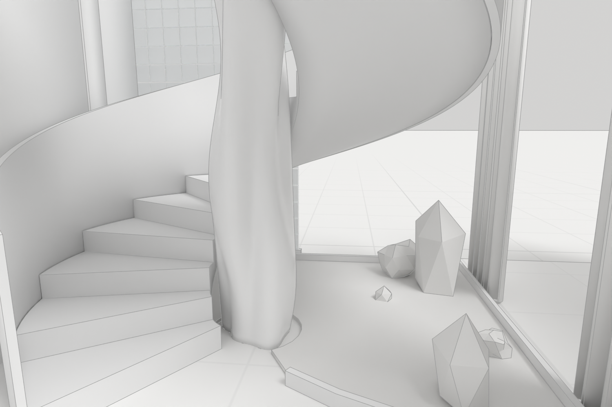
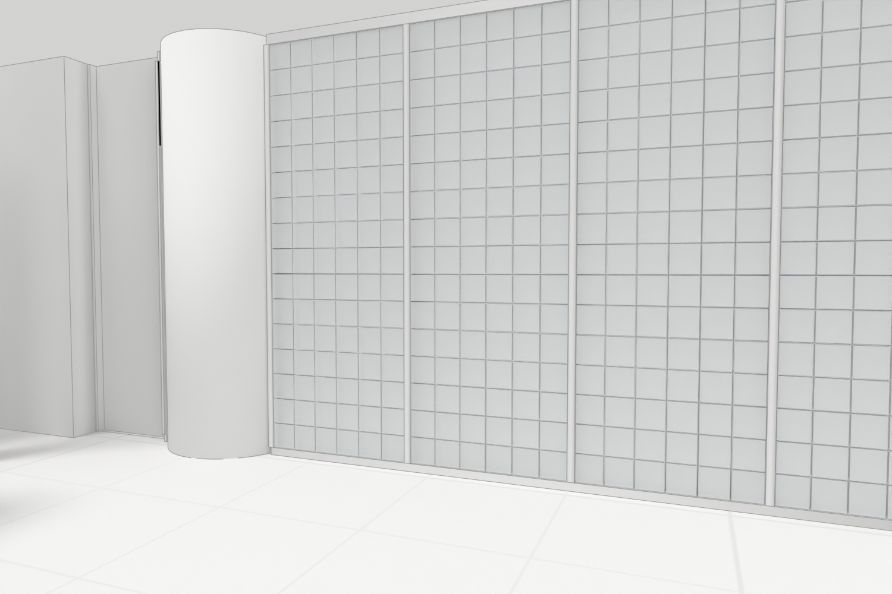

Restaurant · floor1 · étape 3 : les éléments fixes, d'après les photos
24/11/2026 · le style fantôme par défaut, le fil de fer au choix
Tu as retenu le fantôme, et l'équipe pourra choisir une autre variante dans l'application, le fil
de fer par exemple. L'orientation de la vue du haut est validée. Voici les éléments fixes du rez-de-chaussée,
modélisés d'après les photos du LAIR : le bar, les banquettes des tambours, l'escalier, les façades en pavés de verre,
le jardin de pierres, l'accueil et les rideaux. Le mobilier viendra ensuite.
Fantôme, le style par défaut
Les éléments sont coupés à 1,20 m comme les murs. Le bas est plein, le haut est presque invisible : l'arrière-bar, le bandeau de pierre des tambours, le haut de l'escalier et de la sculpture.

Vue du haut

Vue 3D
Fil de fer, au choix dans l'application
Le même modèle, en arêtes seulement. Les pavés de verre ont un trait plus fin et plus clair, sinon leurs grilles rempliraient la carte. Les ombres sont coupées : c'est un dessin.

Vue du haut

Vue 3D
Le bar

Le modèle, en blanc et à pleine hauteur
Le vrai lieu, photo 25
Le comptoir fait 6,5 m. Le plateau client est à 1,08 m, sur une façade de casiers de verre côtelé (photo 6). Côté barman, la tablette de travail est à 0,90 m : c'est la bande claire du plan.
L'arrière-bar fait 5 m, contre le bloc des toilettes : deux colonnes hautes, le meuble bas, deux gradins éclairés pour les carafes, une bande de casiers de verre et un auvent à 2,20 m.
Les banquettes des tambours

Le modèle, en blanc et à pleine hauteur
Le vrai lieu, photo 17
Dans chacun des quatre tambours, une banquette en U suit la paroi. Le socle est en retrait, l'assise est à 0,48 m avec un nez arrondi, et le dossier est fait de trois boudins jusqu'à 0,95 m.
Au-dessus du dossier, un bandeau de pierre de lave court de 1,00 à 1,46 m. Sur les photos, il est éclairé par-dessous.
L'escalier et le jardin de pierres

Le modèle, en blanc et à pleine hauteur
Le vrai lieu, photo 4
Les marches sont pleines, avec des contremarches fermées et une sous-face hélicoïdale. Le garde-corps est un bandeau plein, à 0,90 m au-dessus des nez de marche. Au centre, la sculpture en miroir monte en se tordant (photo 30).
Le jardin a une bordure basse de 10 cm, un grand rocher cristallin de 0,85 m et sept pierres plus petites. Le gravier fait maintenant le tour du pied de la sculpture.
Les façades en pavés de verre

Le modèle, en blanc et à pleine hauteur
Le vrai lieu, photo 8
Les vitrages de l'étape 2 deviennent des pavés de verre de 20 cm, dans des cadres d'acier tous les 1,20 m environ, du seuil jusqu'au linteau. La façade d'entrée, côté rue, est en pavés elle aussi (photo 37).
Modélisés aussi, à voir sur la vue du haut
L'accueil (zone 2 du plan) : le comptoir de conciergerie, à 1,05 m, et une console à l'angle arrondi.
Les rideaux : ce sont les lignes ondulées du plan. Deux pans tombent entre l'entrée et le jardin de
pierres, un autre au bout de la rangée de tambours.
Le style, un réglage de l'application
Les deux styles sortent du même modèle, avec les mêmes caméras et le même soleil. Dans l'application,
ce sera un simple réglage : le fantôme par défaut, le fil de fer ou une autre variante au choix. Le blanc et le
transparent de l'étape 2 restent possibles.
Questions
Les éléments te semblent-ils justes par rapport aux photos ? S'il y a une forme ou une hauteur à reprendre, dis-le-moi avant le mobilier.
Pour le mobilier, je propose : les 13 tables et leurs chaises, les tables rondes des tambours, les 7 tabourets du bar, les tables hautes et les jardinières. Les suspensions au-dessus des tables cacheraient les tables vues du haut. Je les montrerais seulement en 3D, ou en fantôme. Ça te va ?
Je garde les rideaux et la sculpture en miroir ? Ce sont des détails du vrai lieu, mais sur la carte ils ne servent pas au service.
Sources
LAIR Restaurant & Bar, Gurugram, par RENESA Architecture Design Interiors Studio (2024). Les
photos sont d'Avesh Gaur, sur ArchDaily. Elles servent seulement de référence pour la modélisation.